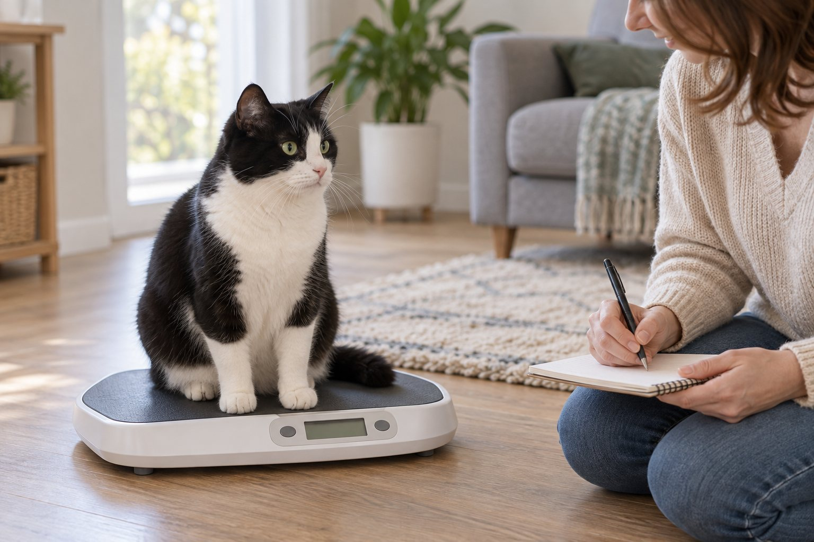

Weigh your pet consistently, record the date and number, and compare the trend with body condition and appetite. Ask your veterinarian about unexplained change rather than adjusting food sharply on your own.
A single number cannot tell you whether a pet is healthy, but a reliable series of numbers can reveal a change you might miss under fur. The most useful home record combines weight, a simple body-shape observation, and context such as appetite or activity. It also gives your veterinary team a clearer picture than “my pet seems thinner.”
Make each weigh-in comparable
Choose one scale that suits your pet. A small cat or dog can be weighed on a secure pet scale or a household scale that gives stable readings; a larger dog may need a floor scale at a clinic or pet store. Never place an animal on a high, slippery surface where a jump could cause injury. If you weigh yourself holding a small pet and subtract your own weight, repeat the method the same way each time and recognize that small differences may be measurement noise.
Use similar conditions when possible: the same scale, roughly the same time of day, and before or after meals consistently. Record the exact date, weight, unit, and anything unusual such as a recent illness or a heavy coat trim. Do not compare a pounds reading with a kilograms reading without converting it. A notebook, phone note, or spreadsheet can work; the record matters more than the app. If your pet cannot stand still, take two or three readings and note the most consistent result.
For many healthy adult pets, a monthly home check is a practical starting habit, but your veterinarian may recommend a different interval. Growing puppies and kittens, senior animals, and pets following a medical or weight-management plan need individual guidance. Daily weighing of a healthy pet can create unnecessary alarm over normal variation. Conversely, waiting many months can hide a steady trend. Ask your veterinary team what frequency makes sense for your animal’s age and health.
Look at several entries together rather than reacting to one number. A different scale, a full stomach, or movement during the reading can shift a result. Recheck an unexpected reading under the usual conditions. If the change persists or comes with symptoms, contact a veterinarian. Rapid weight loss in a cat deserves particular attention; do not attempt an aggressive diet at home. A clinician needs to consider food intake, hydration, muscle, and possible illness.
Pair the number with body condition
Body condition is an estimate of fat cover and overall shape. With your pet standing normally, look from above for a waist and from the side for an abdominal tuck where appropriate for the species and body type. Gently feel along the ribs. They should be possible to feel without pressing hard, while not necessarily standing out visibly. A thick coat can hide changes, so touch and observation both matter. Your veterinarian can teach you a body condition score for your own pet instead of relying on a picture of a different breed.
Muscle is another piece of the picture. An older pet might weigh the same after losing muscle and gaining fat, or a pet may gain weight while becoming more fit. Feel and observe the back, shoulders, and hindquarters with your veterinarian’s guidance. Do not label every visible rib as a problem or assume a broad-chested dog is overweight. Body shape differs by breed, frame, and age. A professional examination helps distinguish normal build from a change worth addressing.
Take a side and top photo in similar lighting every few weeks if the pet tolerates it. A consistent stance makes comparisons more useful. Record body condition comments in plain language: “ribs easier to feel,” “waist less visible,” or “hind-leg muscles look smaller.” Avoid turning the record into a judgment about appearance. The purpose is to spot a shift early and discuss it with a clinician, not to force the pet toward an online ideal weight.
If your pet is already on a veterinary weight plan, use the clinic’s target, feeding amount, and follow-up schedule. Do not replace it with a chart from a food bag or a generic calculator. Weight management can require careful adjustment, especially for cats. Unplanned calorie restriction may be harmful. Tell your veterinarian about treats, table scraps, food shared with other pets, and changes in activity so they can interpret the trend accurately.

Keep a small log that explains the trend
A useful log has four columns: date, weight, body-condition note, and context. Context may include appetite, exercise, medication changes, a new food, or a recent grooming visit. You do not need to write an essay at every entry. A short note such as “normal appetite, less walking after injury” can explain why a number matters later. If more than one person feeds the pet, include who measured meals and treats during the period.
Consider a household with two cats that eat from each other’s bowls. One cat’s weight begins to fall while the other gains. A single total food measure for the household cannot tell you which cat ate what. Weigh each cat separately and observe actual access to food. Ask your veterinarian about feeding stations or monitoring strategies instead of simply increasing the shared portion. This example shows why context is as important as arithmetic.
Use a chart only to see direction, not to diagnose a disease. Mark the weights on a simple line across dates. A gradual rise over several months may call for a feeding review; a sudden drop alongside appetite changes calls for prompt veterinary advice. Do not wait to complete a perfect chart before seeking help. Bring the original numbers to the appointment so the team can check units, scale differences, and the timing of symptoms.
If a reading is surprising, repeat it on the same scale when your pet is calm. Note that it is a repeat, not a new day in the trend. Check whether the scale was on an even floor and whether the pet was fully on it. For a small animal, even a modest absolute change can be meaningful, but the significance depends on the pet’s size and history. Let your veterinarian interpret the pattern with a physical exam.
A simple weight log
Shows the direction over time.
Adds context the scale cannot show.
Helps the veterinarian interpret the trend.
Respond to change without overcorrecting
When you notice weight gain, first check measurement accuracy and what has changed in the household. Treats, larger scoops, a second feeder, less exercise, and a new medication can all be relevant. Keep feeding as usual until you can review the pattern with your veterinary team if the change is unexplained. They can assess body condition and decide whether a tailored nutrition plan is needed. Cutting a large portion from a pet’s diet based on one home weigh-in is not a safe shortcut.
When you notice weight loss, ask about appetite, thirst, stool, activity, and any difficulty chewing or moving. A pet may still eat normally while losing weight, and some illnesses can alter weight before obvious behavior changes appear. Take notes, but do not try to diagnose from a single symptom. Contact a veterinarian promptly for unexplained or continuing loss, especially in a cat or senior animal. A pet that refuses food, is weak, or appears acutely ill needs faster assessment.
Weight changes during growth, pregnancy, recovery, or a prescribed diet follow a different pattern from an ordinary adult maintenance trend. Discuss the expected range with the clinician caring for that pet. A puppy’s increasing weight is normal but should be evaluated with growth and body condition; an older dog’s stable weight does not rule out muscle loss. Your home numbers are most valuable when connected to the animal’s life stage and examination findings.
Keep your communication practical. Instead of “the weight seems wrong,” tell the clinic: “Three readings on the same scale were 5.1, 4.9, and 4.7 kilograms over six weeks, and appetite has changed.” That gives the team a clear starting point. If you do not have a scale, a clinic weigh-in can establish a baseline. Do not postpone a visit while searching for home equipment.
Review the routine with your veterinary team
At a regular appointment, show the log and ask what body condition score and weight range are appropriate for your pet. Request a demonstration of how to feel ribs and assess muscle without pressing painfully. Ask which changes should trigger a phone call and how often to repeat measurements. The answers can differ between a healthy young dog, an older cat, and a pet with a chronic condition. Write down the plan so everyone in the household follows the same method.
If your pet is anxious on a scale, practice stepping on and off without a reading. Reward calm contact, keep the surface nonslip, and end before the pet becomes distressed. A veterinarian can help with safe measurement for a large, fearful, or mobility-limited animal. Never lift a heavy dog alone if you might lose balance. Consistency is useful, but safety comes first. A clinic reading is better than a risky home attempt.
Continue normal prevention and health checks. Weight is only one marker among appetite, energy, mobility, coat, and behavior. A stable line on a chart does not prove everything is fine, and a changed line does not identify a cause. The value of tracking is that it prompts a clearer conversation and can show whether an agreed plan is working over time. Keep the log simple enough that you will actually use it.
The next step is small: record one safe baseline weight and one plain-language body-condition observation. Put a reminder on your calendar for the interval your veterinary team recommends. Review the pattern, not isolated fluctuations, and ask for help early when a trend or symptom concerns you. Home monitoring supports clinical care; it does not replace it.
Scale placement is a common source of false changes. A household scale on thick carpet may read differently from the same scale on a hard, level floor. Write down the location and use it again. For a small pet measured by subtraction, take your own weight immediately before the combined reading rather than relying on yesterday’s number. If the pet wriggles, do not insist on a precise home value at the cost of a fall; use a clinic scale instead.
When reviewing a graph, separate a true trend from measurement scatter. Three readings drifting in the same direction under consistent conditions deserve attention; a single isolated point may need confirmation. Draw a note at the date of a new diet, medication, surgery, or major activity change. This does not prove cause and effect, but it helps the veterinary team ask better questions. Keep the original entries rather than deleting a number that looks inconvenient.
Share the log before an appointment if the clinic accepts it, or bring a clear copy. Include the unit on every page. If a pet has a prescribed weight-loss plan, ask how much change is expected over the next interval and which result would be too fast. The safe rate is individual; online targets cannot account for all health conditions. A follow-up appointment checks both the number and the pet’s wellbeing.
Continue exploring
For a broader routine, read Why Does My Dog Scratch Even When He Doesn't Have Fleas?, Why Is My Dog Shaking? Common Reasons Explained, and What Does Bad Breath in Dogs and Cats Mean?.
Frequently Asked Questions
How often should I weigh a healthy adult pet?
A monthly check is a reasonable starting habit for many adults, but your veterinarian may advise a different interval based on age, size, health, or a weight plan.
Can my pet look thin but weigh the same?
Yes. Muscle loss and fat gain can occur together. Ask your veterinarian to assess both body condition and muscle condition rather than relying on the scale alone.
Should I reduce food after one high reading?
Recheck the reading under the usual conditions and review the trend. Contact your veterinarian for an individual feeding plan rather than making a large calorie change from one measurement.
Editorial references
These resources informed the general guidance in this article. They do not replace advice tailored to your pet.
This guide offers general information. Your pet’s age, health, and history may call for a different plan. For medical concerns, ask your veterinarian.